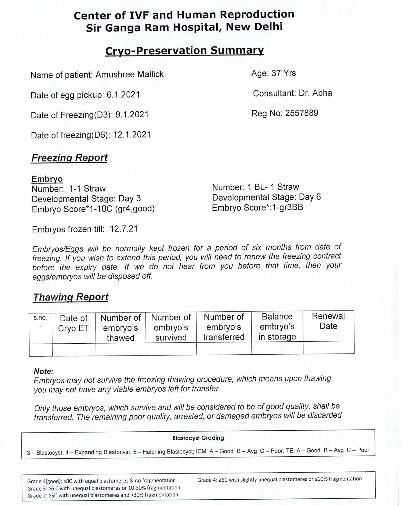

$~106

* IN THE HIGH COURT OF DELHI AT NEW DELHI

% Judgment pronounced on: 27.10.2025

+ W.P.(C) 3953/2025

TAPAS KUMAR MALLICK & ANR......Petitioner

Through: Mr. S.M. Tripathi, Mr. Divyanshu

Priyam, Advs.

versus

UNION OF INDIA & ANR......Respondents

Through: Ms. Arunima Dwivedi (CGSC) along

with Mr. Akash Pathak (GP), Ms.

Himanshi Singh, Ms. Monalisha Pradhan, Ms. Priya Khurana, Advs.


CORAM:
HON'BLE MR. JUSTICE SACHIN DATTA


SACHIN DATTA, J. (Oral)

- The present petition has been filed by the petitioners, an ‘intending

couple’ within the meaning of Section 2(r) of the Surrogacy (Regulation)

Act, 2021(hereinafter referred to as ‘the Act’), aggrieved by the upper age limit prescribed under Section 4(iii)(v)(c)(I)1 of the Act.

- As per Section 4(iii)(v)(c)(I) of the Act, a male must be between 26

and 55 years of age, and a female must be between 23 and 50 years of age to


1(c) an eligibility certificate for intending couple is issued separately by the appropriate

authority on fulfilment of the following conditions, namely:—
- the intending couple are married and between the age of 23 to 50 years in case of

female and between 26 to 55 years in case of male on the day of certification;


W.P.(C) 3953/2025

be eligible for surrogacy as an advanced fertility treatment. Petitioner no.1

(husband) is aged 57 years (approx.) and petitioner no.2 (wife) is aged 42

years (approx.).

The narrow conspectus in the backdrop of which the present petition

arises is that after multiple unsuccessful attempts at conception (including

through IVF), and in consideration of their medical condition, the petitioners

were advised by medical practitioners to pursue surrogacy as the only

feasible option to achieve parenthood.

- It is the case of the petitioners that, petitioner no. 1, having crossed

the upper age limit prescribed under Section 4(iii)(v)(c)(I) of the Act, has

been rendered ineligible for the surrogacy procedure. This disqualification

has operated to the detriment of the petitioners, despite the fact that the

petitioners initiated the requisite process as far back as on 06.01.2021, prior

to the commencement of the Act, which came into force on 25.01.2022.

- It is submitted that a rigid application of Section 4(iii)(v)(c)(I) of the

Act is discriminatory, arbitrary and infringes upon the petitioners’

fundamental right to reproductive autonomy.

- Learned counsel for the petitioners has drawn attention to the fact that

the procedure for retrieval of embryos was conducted on 06.01.2021, and the said embryos were cryo-preserved (frozen) on 12.01.2021 until

12.07.2021. The Cryo-Preservation Summary, evidencing the same, is

annexed to the present petition as Annexure P-1 (Colly). The said Summary,

which precedes the enforcement of the Act, is reproduced as under:


W.P.(C) 3953/2025


W.P.(C) 3953/2025

- Learned counsel for the petitioners placed reliance on the orders dated

10.10.2023 and 08.04.2024, passed by this Court in W.P.(C) 12395/2023,

captioned as “Mrs. D & Anr. vs. Union of India”, which was in a similar

conspectus. The relevant extract of the order dated 10.10.2023 reads as
under:

- Thus, while the Court deliberates on the challenge to the validity of

Section 4(iii)(c)(I) of the SR Act, considering the Petitioners’ situation

and the peculiar facts and circumstances of this case, we are inclined to

grant an interim relief. It is imperative to acknowledge the profound

emotional and psychological distress endured by the petitioners as a

consequence of their present predicament. Their inability to proceed with

the surrogacy procedure has placed them in a state of anguish and uncertainty, deeply affecting their mental and emotional well-being. Such

circumstances underscore the pressing need for interim relief and

compassionate consideration. The Court recognises the paramount

importance of relieving the Petitioners from this agonising wait, and

granting them the opportunity to pursue their aspiration of parenthood,

especially when the embryos in question were created during a time

when these legal constraints were not in effect, As discussed above,

Petitioner No.1’s egg retrieval and freezing were done in 2016-17, and

Petitioner No.2’s sperm were frozen on 29th November, 2021, before the

enforcement of SR Act and ART Act. Furthermore, Petitioners intend to

commission surrogacy through a woman who fulfils the eligibility

criteria prescribed under Section 4(iii)(b) of SR Act.

- Therefore, we are inclined to allow the Petitioners to continue with

their treatment through gestational surrogacy. Accordingly, we direct

that, subject to fulfilment of all other conditions under the SR Act and

other applicable laws, an eligibility certificate be issued to the

Petitioners, enabling them to avail the surrogacy procedure from the

embryos already created through their IVF treatment.”


- Further, reliance is placed on the decision of the Supreme Court in Vijaya Kumari S & Another v. Union of India,W.P(C) 331/2024 (and

connected matters), wherein it has been held as under:

“14.3 Therefore, we deem it appropriate to observe that the

‘commencement’ of the surrogacy process for the limited purpose of

determining when the age-limits under the Act must be applied prospectively and not retrospectively takes place after the intending


W.P.(C) 3953/2025

couple has completed the extraction and fertilisation of gametes and has

frozen the embryo with an intention to and for the purposes of, transfer to

the womb of the surrogate mother. There is no additional step to be

undertaken by the couple themselves. All subsequent steps would involve

only the surrogate mother. There is nothing else for the couple to do by

themselves, that would strengthen the manifestation of their intention to

pursue surrogacy. Therefore, the freezing of embryos for the purpose of

surrogacy is a stage at which one can say that the intending couple has

taken multiple bona fide steps and had manifested their intention to

pursue surrogacy and all that remained was involvement of the surrogate

mother herself in Stage B of the diagram, which could not be gone

through due to various circumstances including the intervention of

Covid-19 Pandemic in these cases.

xxx xxx xxx

15.9 We therefore hold that creation of embryos and freezing of the same is crystallization of the said process as it clearly demonstrates the

intention of the couples i.e., intending couples, in the instant cases. The

earlier stages, namely, (i) Visit to surrogacy clinic, (ii) Counselling of the

patient, (iii) Obtaining of the various permissions / certificates from

Appropriate Authorities under Section 4 of the Act, (iv) Extraction of

gametes of Stage A, are no doubt part of surrogacy procedure but are

stages prior to the crystallization of the intention of the couple to

undertake a surrogacy procedure an interpretation we are giving in the

context of age barriers. Therefore, when there was no age restriction at

the stage of creation of embryos and freezing them i.e., prior to the

enforcement of the Act, when the intending couples are at the threshold

of Stage B, the age restriction under the Act cannot be permitted to

operate retrospectively on such intending couples as in the present cases

so as to frustrate not just the surrogacy procedure but also their right to

have a surrogate child or become parents, the latter being a

constitutional right under Article 21 of the Constitution.


15.10 Therefore, the rule against retrospective operation of statutes applies in the instant case in order to preserve the rights of intending

couples such as the petitioners/applicant in the present case. If we do not

apply the aforesaid principle of interpretation of statutes we would

failing in our duty to uphold the constitutional right of such intending

couples under Article 21 of the Constitution. Therefore, we hold that the

age bar does not apply to intending couples such as the ones we are considering in the present cases.


- Thus, if an intending couple had –


W.P.(C) 3953/2025

- commenced the surrogacy procedure prior to the commencement of

the Act i.e., 25.01.2022; and

- were at the stage of creation of embryos and freezing after extraction

of gametes (Stage A of the diagram); and

- on the threshold of transfer of embryos to the uterus of the surrogate

mother (Stage B of the diagram)

The age restriction under Section 4(iii)(c)(I) of the Act would not apply.

The competent authority, on being satisfied about the aforesaid

conditions (i), (ii) and (iii) above shall issue the certification provided

Rule 14 of the Rules are satisfied by the intending couples.”

- In light of Vijaya Kumari S (supra), and considering that the

petitioners initiated the surrogacy procedure prior to the enforcement of the

Act, this Court is of the view that Section 4(iii)(v)(c)(I) of the Act shall not

be applicable to the petitioners herein. Accordingly, the petitioners are

allowed to move forward with the surrogacy process, notwithstanding the

age of petitioner no.1. The petitioners are exempted from seeking the

eligibility certification, provided they satisfy all other applicable conditions

under the Act and the Surrogacy (Regulation) Rules, 2022.

- The petition stands disposed of in the above terms.

SACHIN DATTA, J OCTOBER 27, 2025/ss


W.P.(C) 3953/2025